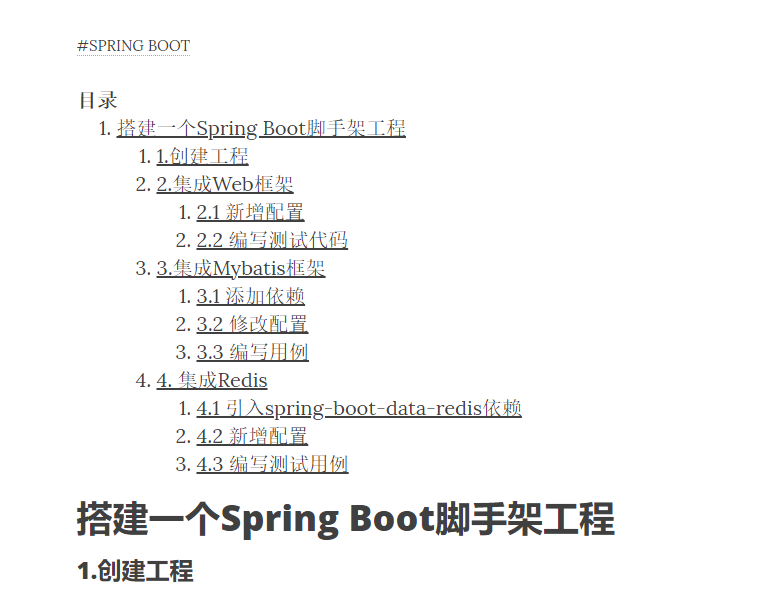
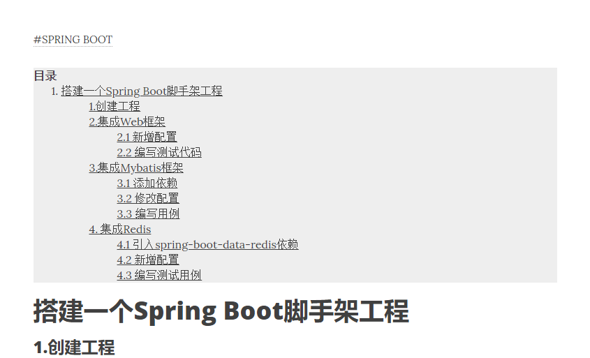

现在大多数人写博客都采用Hexo 提供的模板，为了不至于落后时代太多，咱也赶紧用起来。一般文章都会有目录索引，为了自己的博客更加完善也更加规范化，最近在网上找了一些相关资料，给自己的博客文章加上了目录。
1. 新增 toc.ejs 文件
打开本地所使用的主题文件夹，在 /layout/partial 文件夹下，新建一个 toc.ejs 文件，并填充以下内容
1 | <% if (item.toc != false) { %> |
其中 item. 这个前缀因人而异，有些主题可能是post., 保持跟 article.ejs 里面的前缀一致即可，不然在在执行 hexo g 时可能会报错。这里是采用了分片包含的写法，方便日后修改和维护。之后只需在article.ejs 里边将 toc.ejs包含进来即可。
在article.ejs文件里头，找到
1 | <%- item.content %> |
这行内容，代表这文章的正文内容，在其上面加上一行
1 | <%- partial('toc') %> |
即可， 准备工作已然完成了一半。
2. 修改_config.yml文件
修改配置文件，加入目录的全局配置
1 | toc: |
这些配置选项的详细信息，可以参考给出的官方文档，摘录如下：
| 选项 | 描述 | 默认值 |
|---|---|---|
| class | 样式类名 | toc |
| list_number | 显示编号 | true |
| max_depth | 目录最大深度 | 6 |
| min_depth | 目录最小深度 | 1 |
| symbol | 目录标题标志 | h3 |
一切就绪之后，
1 | hexo clean && hexo g && hexo s |
看一下效果如何

可以看到文章的目录已经生成了，但是好像有那么一点不尽如人意的地方，目录自己生成了序号，与原来的序号合在一起显得多余了。诶，怎么这么奇怪？明明在toc.ejs中已经加上了
1 | list_number : false |
选项了。百思不得其解…继续搜索资料，同时在本地预览打开F12审查下元素，最后发现是css样式的锅…
于是乎，找到theme/{your_theme}/source文件夹下的css目录，打开其中的article.styl文件，在其最后面添加上这么一段
1 | #toc |
然后保存再重新跑一遍看看效果

大功告成!
参考资料: